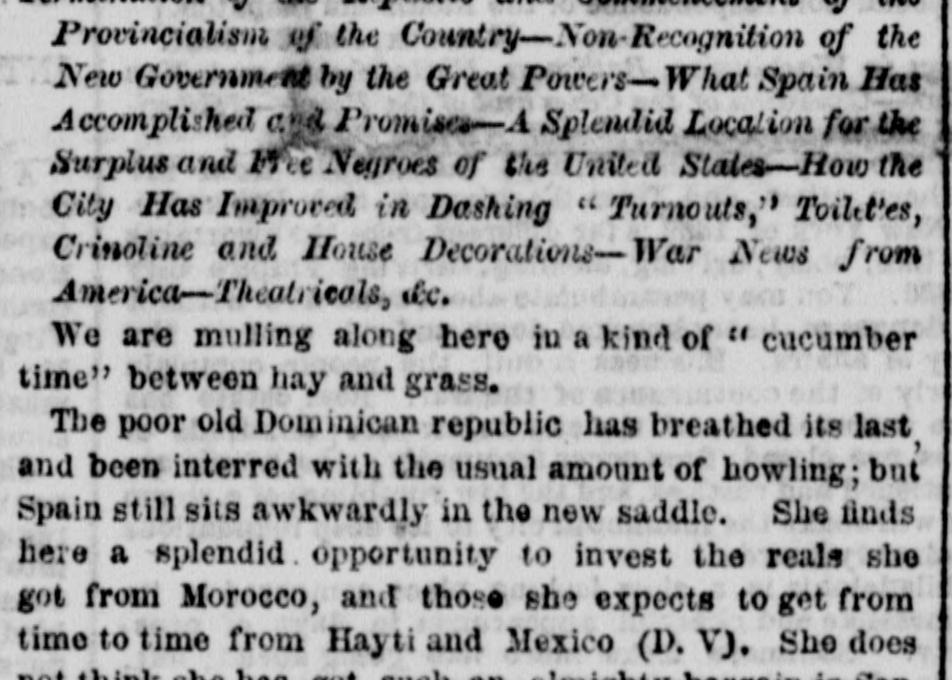
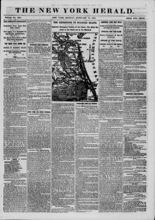

1'rvrincialism tf the Chantry?Xom-Recognition of the A'?j Government hy the GreatProvincialismo de la Chantry—No reconocimiento del Gobierno por las Grandes
The New York Herald. New York [N.Y.], February 10, 1862. Page 1. View the originalVer el original


See the full pageVer la página completaBased on the provided excerpt, the Dominican Republic has expired and been annexed by Spain, though the great Powers—including France, England, and the United States—have not yet recognized the island as a Spanish province. Spain is reportedly reconsidering the value of its acquisition, while proposing a new tariff to reduce duties on foreign goods and making Samana a free port for all nations. Additionally, the report notes that complete religious toleration will be exercised and hints that President Lincoln might be invited by Queen Isabella II to send "contrabands" to the territory.A partir del extracto, la República Dominicana se extinguió tras su anexión por parte de España, aun cuando las grandes potencias —entre ellas Francia, Inglaterra y los Estados Unidos— no han reconocido formalmente la isla como provincia española. Se indicaba que España reconsideraba el valor de su adquisición al tiempo que proyectaba un nuevo arancel con rebajas a los efectos extranjeros y declaraba a Samaná puerto franco para todas las banderas. Además, la crónica refiere que regirá una tolerancia religiosa plena e insinúa que la reina Isabel II podría invitar al presidente Lincoln a trasladar a los libertos e insurrectos negros («contrabands») a dicho territorio.
FULL TEXT:TEXTO COMPLETO:
Provincialism of the Country—Non-Recognition of the New Government by the Great Powers—What Spain Has Accomplished and Promises—A Splendid Location for the Surplus and Free Negroes of the United States—How the City Has Improved in Dashing "Turnouts," Toilettes, Crinoline and House Decorations—War News from America—Theatricals, &c.Provincialismo del País —No Reconocimiento del Nuevo Gobierno por las Grandes Potencias —Lo Que España Ha Logrado y Promete —Una Espléndida Ubicación para los Negros Excedentes y Libres de los Estados Unidos —Cómo la Ciudad Ha Mejorado en «Turnouts» Dashing, Toilettes, Crinolina y Decoraciones de Casa —Noticias de Guerra de América —Teatrales, etc.
We are mulling along here in a kind of "cucumber time" between hay and grass.Estamos avanzando aquí en una especie de «tiempo de pepino» entre heno y grama.
The poor old Dominican republic has breathed its last, and been interred with the usual amount of howling; but Spain still sits awkwardly in the new saddle. She finds here a splendid opportunity to invest the reals she got from Morocco, and those she expects to get from time to time from Hayti and Mexico (D. V.). She does not think she has got such an almighty bargain in SanLa pobre vieja república dominicana ha exhalado su último aliento, y ha sido enterrada con la cantidad usual de aullidos; pero España todavía se sienta torpemente en la nueva silla. Encuentra aquí una espléndida oportunidad para invertir los reales que obtuvo de Marruecos, y aquellos que espera obtener de tiempo en tiempo de Haití y México (D. V.). No piensa que ha obtenido una ganga tan todopoderosa en San